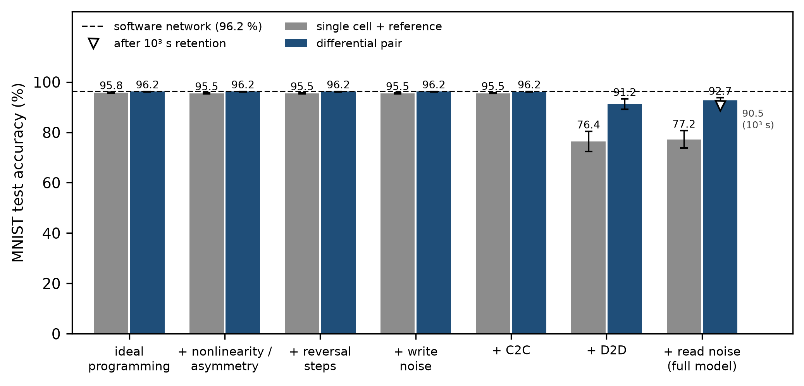

Two operating modes in one material stack
In Wang’s Thin Film Group, we studied a trilayer vertically aligned nanocomposite memristor that supports two kinds of electrical behavior. One mode gives a wide memory window for storing distinct states. After forming, the second mode allows gradual changes in conductance. That second response raised a computing question for me: how accurately could a network represent a weight if each physical device updated a little differently?
Materials research and device-aware modeling
I contributed to the collaborative materials and device study and led the computational work. My materials research connected thin-film fabrication and characterization with electrical switching behavior. For the computing study, I analyzed measured pulse sequences, built a synapse model, and used it to program weights in a simulated array.
An increase in conductance did not simply retrace a preceding decrease. In particular, the first pulse after a polarity reversal could produce a disproportionately large step. I extracted these features from the pulse data along with cycle-to-cycle variation, device-to-device spread, noise, and retention drift. I checked how well the model reproduced the shape of repeated potentiation and depression cycles before applying it to a network.

Which device variations cost accuracy?
I compared two ways of encoding a signed weight: a single programmed cell relative to a reference and the conductance difference between a pair of cells. I added measured effects cumulatively to the simulated array and evaluated MNIST after each addition. Write verification could compensate for much of the update nonlinearity and cycle-to-cycle variation by spending extra pulses. A cell with an unusually narrow conductance range presented a different problem: some target weights were out of reach.

Across five independently sampled arrays, the full differential-pair model reached 92.7 ± 1.1% MNIST accuracy, compared with 77.2 ± 3.5% for single cells with a reference and 96.2 ± 0.1% for the software baseline. Including the measured 1,000-second retention drift brought the differential-pair result to 90.5 ± 1.6%. These array-level results are simulations informed by measured device behavior.
Related manuscript
Zhengliang Lin and Henan Wang (co-first authors), et al., “Realizing Dual-Mode Memristor Based on Ni₀.₈Fe₀.₂-BTO/BTO/Ni₀.₈Fe₀.₂-BTO Tri-layer Vertically Aligned Nanocomposites.” Small, under review after two rounds of revision.
Research background in my CV (PDF) · RRAM compact modeling and programming